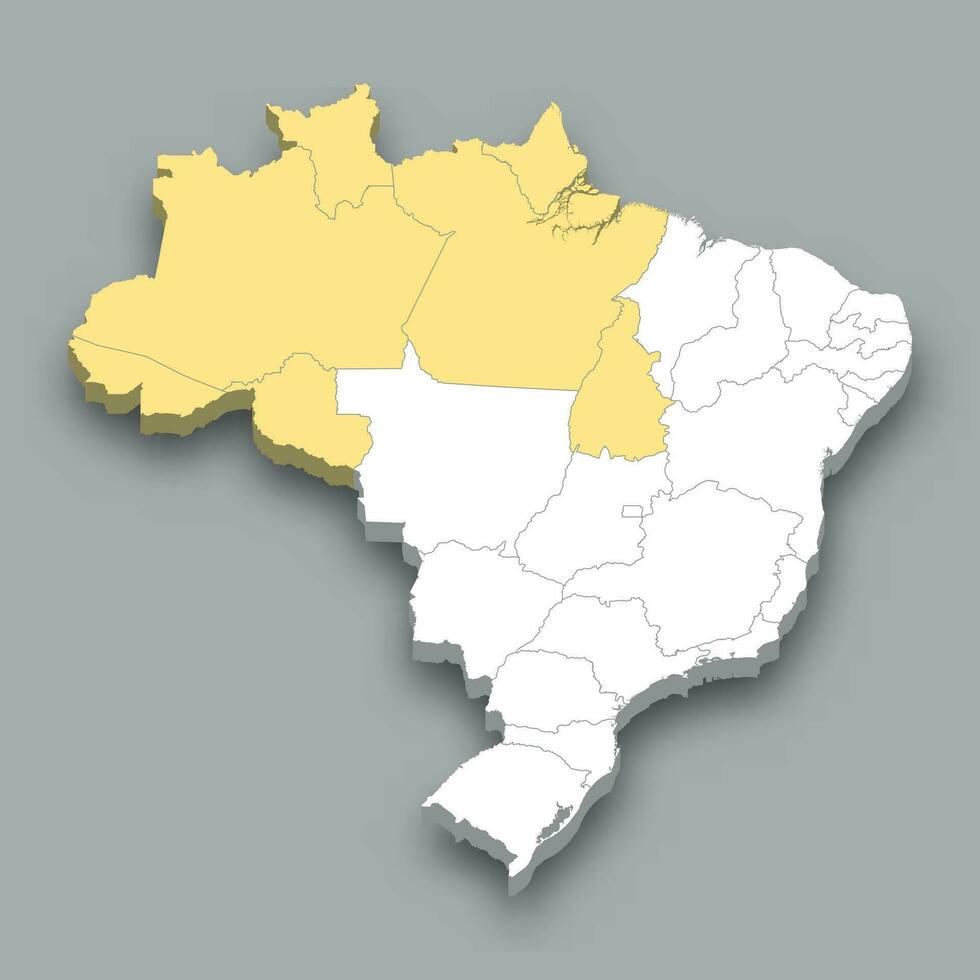

A economia da região Norte do Brasil é constituída basicamente por atividades ligadas ao setor primário,
destaque para o extrativismo (vegetal, animal e mineral) e agropecuária.
A região é considerada uma fronteira agrícola do Brasil,
nela são produzidos desde produtos tradicionais, como mandioca, milho e arroz
, até de exportação, como a soja, que tem sido uma cultura bastante difundida na região e ao mesmo tempo
a que mais provoca desmatamento da floresta Amazônica.
A agricultura na região se destaca historicamente pela diversidade
de produtos que cultiva. Alguns essenciais para o consumo brasileiro: a mandioca,
o feijão, a castanha-do-brasil e frutas tropicais, como maracujá, cupuaçu e guaraná.
